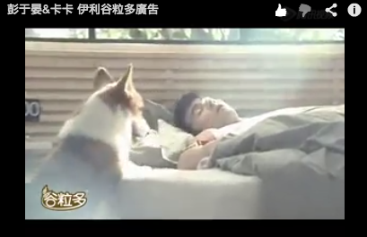

續前文（附連結）


＝＝＝＝＝＝＝＝＝＝＝＝＝
先來張順利完成拍攝後的大合照 
要不是我太矮，搭在熊爸身上的那隻手應該是在我身上才對ㄅ 
抱著卡卡看起來很有藝術氣息的就徐筠庭導演本人，是知名的MV導演呦！
他對卡卡的配合度極激賞，他大概沒想到拍小狗也可以這麼順利，哈
haha～希望有機會能在導演的MV中再尬一角（請多多指教）

廣告總共拍了兩天，第二天通告8:45 阿榮片廠 拍攝棚內場景
猛哥這天沒跟，只有我一個人開車載卡卡去林口的阿榮片廠
只能說真是太感謝這世界發明導航這東西

今天就沒有保姆車坐了，只能窩在像福利社（？）的員工餐廳休息
棚內的拍攝照片很少，因為沒有帶小幫手幫忙側拍，好可惜！

今天主要的畫面有三部分
1. 床戲（？）卡卡要咬著牽繩到床邊給彭于晏
2. 吻戲（？）要在胸口臉頰邊啄啄表示叫彭于晏起床
3. 最後是起床後，卡卡要急著拉彭于晏出門散步
我們卡卡的螢幕初吻今天就獻給Eddie葛哥了 

劇組貼心再一發
事前熊爸有協助溝通，如果拍攝需要跳上床的部分，請他們幫忙準備小階梯
工作人員個個都高手，現場立刻生出一個高度剛好的樓梯

熊爸在放零食路線，誘導卡卡走位
躺在床上不是彭于晏本人（哼！馬上被卡卡識破）
他是彭于晏的光替，就一直躺在那直到開拍，哈哈哈

第一次跟拍覺得好新鮮
棚內的景都是臨時打造出來的，雖然只有做小區塊但是拍起來超美
好像在逛ikea（？）

正式開拍，卡卡很認真聽熊爸叫他記得走樓梯上去
然後卡卡每衝上去一次，彭于晏都會慘叫一聲，至於踩到那我就不明講了
我兒子都來真的......（汗）

當初熊爸說萬一卡卡無法順利的上床叫彭于晏起床
只好委屈（？）瑪麻躲在棉被裡叫他上來
結果這屎孩子連做個球給老木都不會，拍的這麼順利幹嘛啦！嘖嘖

廣告中第一幕就是卡卡咬著牽繩給Eddie葛哥的畫面
真的是畢其功於一役了，卡卡是可以指定任何物品拿給任何人
當初教這個只是因為媽媽懶，請他幫忙拿東西給把拔，或者拿垃圾丟進垃圾桶 XD

來來回回拍了很多次，讓導演可以取各個角度
中間跟彭于晏自然的互動許摩卡還自己加戲，超可愛der 
可惜廣告再長也只有30秒，只能抓重點用

拍攝特寫，當演員也是蠻害羞的，一個鏡頭旁邊塞了這麼大群人在看你

片廠內空氣很差，灰塵超厚的！
沒有戲份的時候就會把卡卡帶出來
順便跟熊爸討教專業的訓諌知識（多聊多賺到？XD）

第二天的拍攝部分比較少，等很久終於要拍最後一幕
許卡卡很乖，沒他的事都會安靜的趴在邊邊等

通常熊爸都會帶著卡卡先示範一遍
如果沒有熊爸跟著，應該無法順利完成，他真的很多撇步可以讓卡卡輕鬆做到要求

某小狗跟某明星都很放空.......XD

吸引我兒子往前衝很容易，就站在對面拿著他最愛的球球（發出啾啾聲就好）
柯基的叫聲真的很大聲！！！
＝＝＝＝＝＝＝＝＝＝＝＝＝＝
等等要跟彭于晏一起專訪  【廣告初體驗】卡卡＆彭于晏 搶先跟大家拜年
【廣告初體驗】卡卡＆彭于晏 搶先跟大家拜年
oh~oh~oh 外面陽光好棒！！ 我們家這個小鳥控立刻趴在床邊找小鳥

這個是全室內場景怎麼可能有太陽啦！
外面只是放了好幾盆樹跟攝影棚燈打造出來的光線，還真的超美！


這個是你跟Eddie葛哥的家哦！等一下就要拆了，快點多拍幾張 哈哈


拍完，我家房間我也想重新改造了，無印良品屎待呦！


許摩卡在當人形看板中，現場每個人手機裡應該都有他的照片 XD

等專訪也是等等等等好久～～～

是說這假太陽拍出來真的太美了！等的時間又在殺記憶體了（已滿）

＝＝＝＝＝＝＝＝＝＝＝＝＝＝＝＝＝＝
這次廣告機會也是來得巧妙，因為上熊爸的課才有機會認識熊爸
某天熊爸打來問我有個試鏡的機會要不要讓卡卡試，是跟彭于晏拍廣告
一聽到彭于晏三個字西花媽媽立刻說：好！XD
試鏡就在家裡附近空地，也沒特別做什麼，就把會的來一遍，廣告公司再拍回去給業主看
很難得廣告中會指定要柯基
通常都是選黃金或拉拉這種大型犬居多，小短腿終於出頭天啦！

兩天的廣告拍攝，卡卡給我好多的想不到驚喜
卡卡，謝謝你這麼信任瑪麻，也很謝謝熊爸的推薦＆協助
卡小弟狗生能有個代表作品真的可喜可賀！